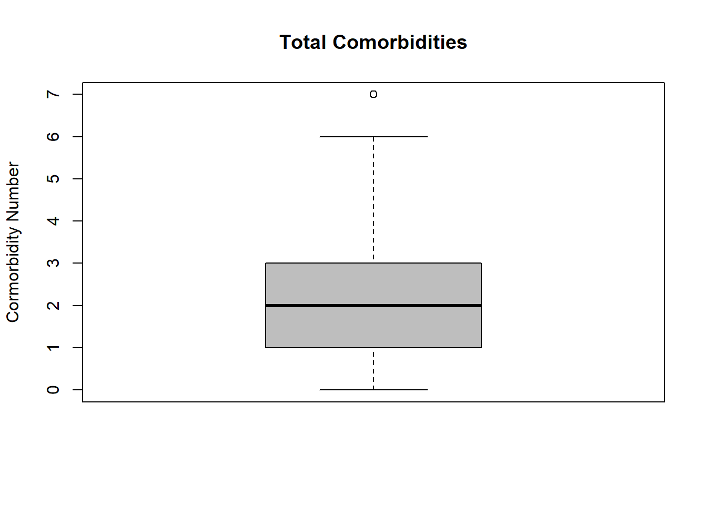
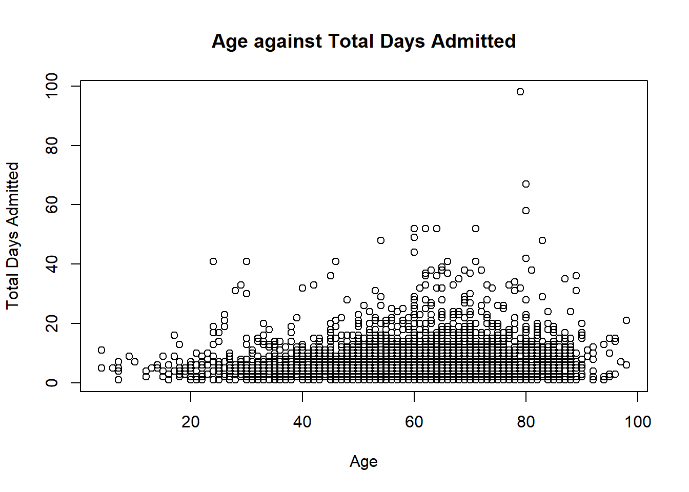
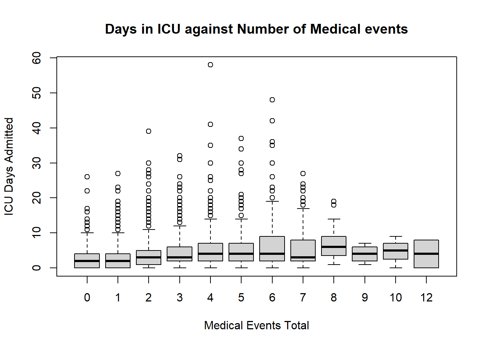
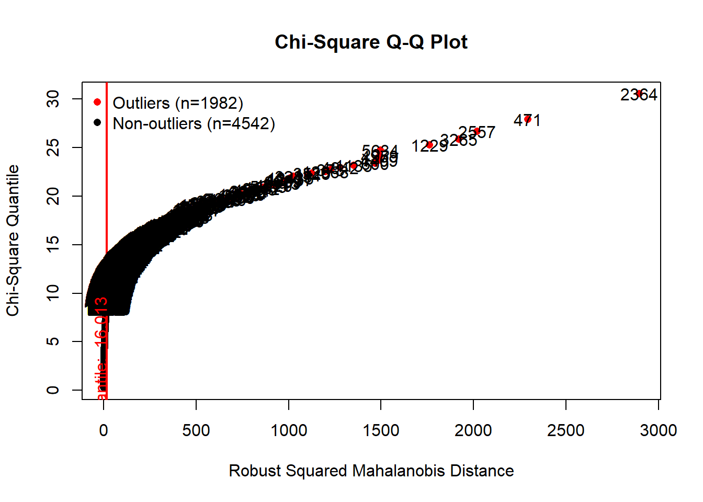
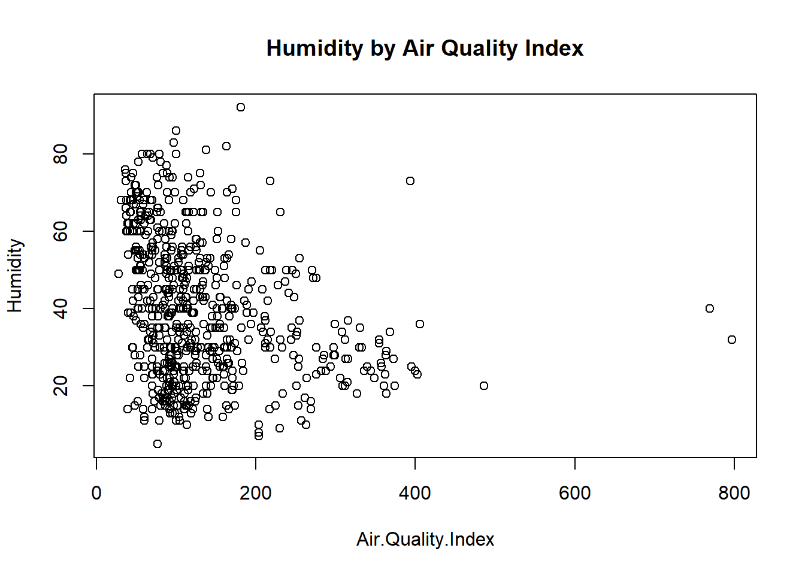
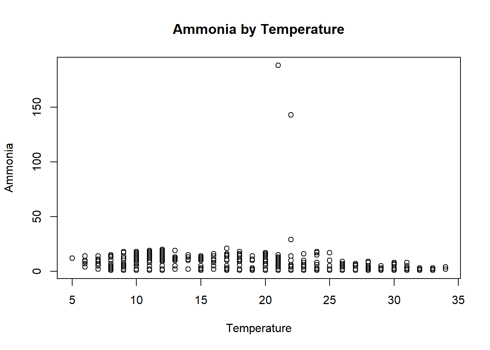
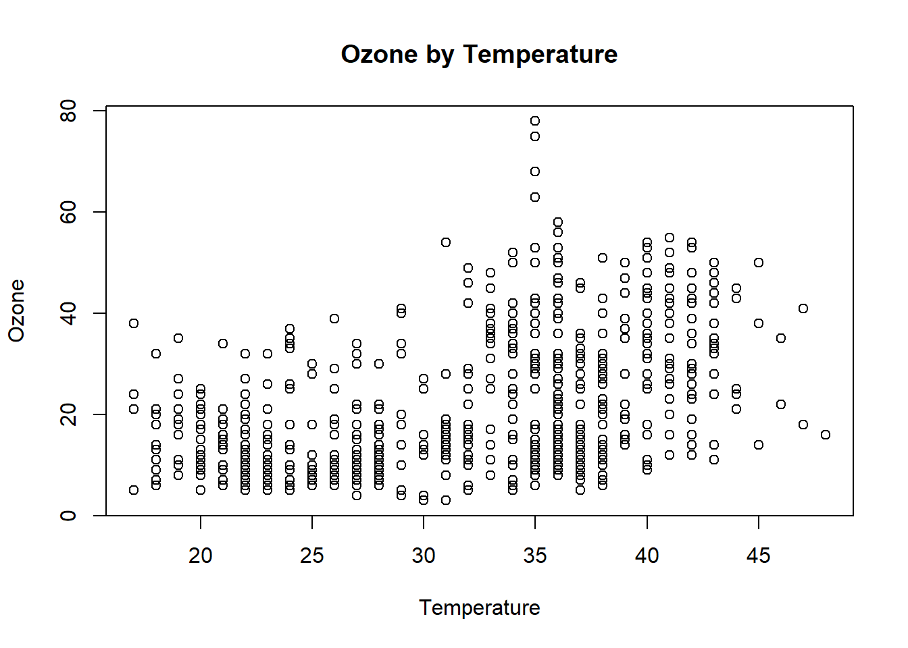
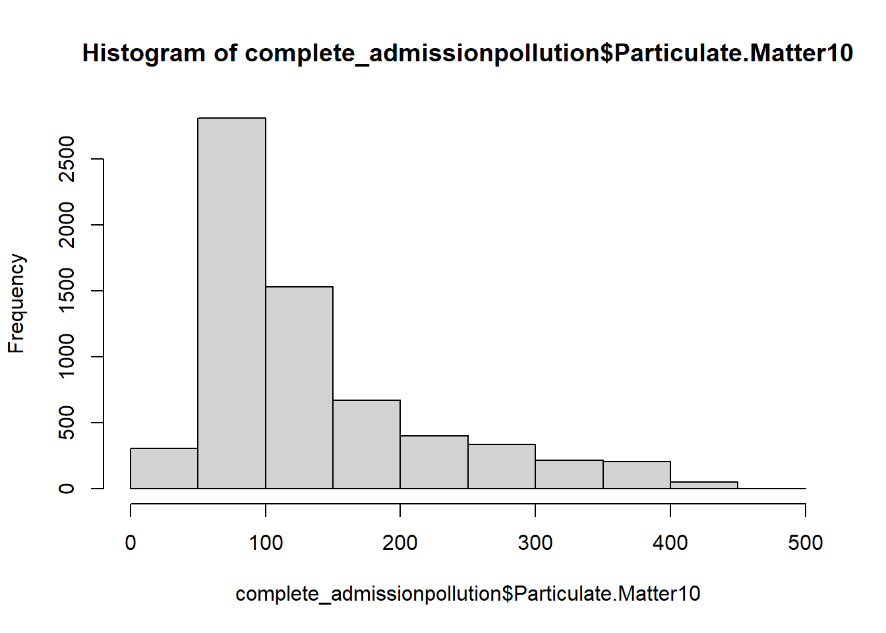
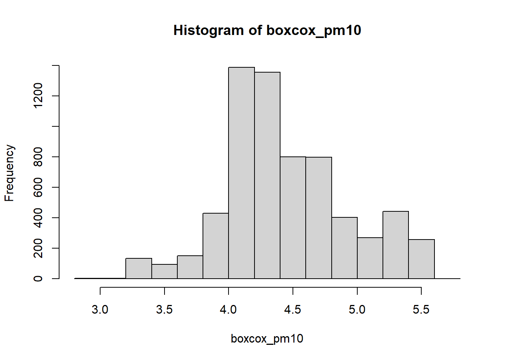

The following packages were loaded into RStudio to for data wrangling and to reproduce this report: library(readr)
library(foreign)
library(rvest)
library(knitr) library(dplyr) library(openxlsx) library(magrittr) library(tidyr) library(glue)
library(stringr) library(deducorrect) library(deductive) library(validate) library(Hmisc) library(MVN) library(forecast)
library(readr)
library(foreign)
library(rvest)
library(knitr)
library(dplyr)
library(openxlsx)
library(magrittr)
library(tidyr)
library(glue)
library(stringr)
library(deducorrect)
library(deductive)
library(validate)
library(Hmisc)
library(MVN)
library(forecast)The data sets used for this report were sourced from Kaggle which is an open source data website (https://www.kaggle.com/ashishsahani/hospital-admissions-data). Titled “Hospital Admissions Data Two Year Hospital Admissions and Discharge Data from Hero DMC Heart Institute”, the data was available for download in 2 different dataset CSV files collected from a hospital in Ludhiana, India. The variables from the first dataset comprise of hospital admission rates by date, with correlating data about each patients hospital admission. This included blood results, comorbodities of the patient, length of stay in hospital and also information about the medical events whilst in hospital. The second dataset comprises variables including pollution levels, common markers of pollution measured on dates correlating to the hospital admission dates in the first data set. The data was loaded into R using the ‘read.csv’ function.
admission_data <- read.csv("HDHI Admission data1.csv")
pollution_data <- read.csv("HDHI Pollution Data1.csv")Head() and tail() show a snapshot of both the data sets.
head(admission_data)## ï..SNO MRD.No. D.O.A D.O.D AGE GENDER RURAL
## 1 1 234735 4/1/2017 4/3/2017 81 M R
## 2 2 234696 4/1/2017 4/5/2017 65 M R
## 3 3 234882 4/1/2017 4/3/2017 53 M U
## 4 4 234635 4/1/2017 4/8/2017 67 F U
## 5 5 234486 4/1/2017 4/23/2017 60 F U
## 6 6 234675 4/1/2017 4/10/2017 44 M U
## TYPE.OF.ADMISSION.EMERGENCY.OPD month.year DURATION.OF.STAY
## 1 E Apr-17 3
## 2 E Apr-17 5
## 3 E Apr-17 3
## 4 E Apr-17 8
## 5 E Apr-17 23
## 6 E Apr-17 10
## duration.of.intensive.unit.stay OUTCOME SMOKING ALCOHOL DM HTN CAD
## 1 2 DISCHARGE 0 0 1 0 0
## 2 2 DISCHARGE 0 1 0 1 1
## 3 3 DISCHARGE 0 0 1 0 1
## 4 6 DISCHARGE 0 0 0 1 1
## 5 9 DISCHARGE 0 0 0 1 0
## 6 8 DISCHARGE 0 0 1 1 1
## PRIOR.CMP CKD HB TLC PLATELETS GLUCOSE UREA CREATININE BNP
## 1 0 0 9.5 16.1 337 80 34 0.9 1880
## 2 0 0 13.7 9 149 112 18 0.9
## 3 0 0 10.6 14.7 329 187 93 2.3 210
## 4 0 0 12.8 9.9 286 130 27 0.6
## 5 1 0 13.6 9.1 26 144 55 1.25 1840
## 6 1 0 13.5 22.3 322 217 51 0.9 1720
## RAISED.CARDIAC.ENZYMES EF SEVERE.ANAEMIA ANAEMIA STABLE.ANGINA ACS STEMI
## 1 1 35 0 1 0 1 0
## 2 0 42 0 0 0 0 0
## 3 0 0 0 0 0 0
## 4 0 42 0 0 0 0 0
## 5 0 16 0 0 0 0 0
## 6 0 25 0 0 0 1 0
## ATYPICAL.CHEST.PAIN HEART.FAILURE HFREF HFNEF VALVULAR CHB SSS AKI
## 1 0 1 1 0 0 0 0 0
## 2 0 0 0 0 0 0 0 0
## 3 0 1 1 0 0 0 0 1
## 4 0 0 0 0 0 0 0 0
## 5 0 0 0 0 0 0 0 0
## 6 0 1 1 0 0 0 0 0
## CVA.INFRACT CVA.BLEED AF VT PSVT CONGENITAL UTI NEURO.CARDIOGENIC.SYNCOPE
## 1 0 0 0 0 0 0 0 0
## 2 0 0 0 1 0 0 0 0
## 3 0 0 0 0 0 0 0 0
## 4 0 0 0 0 0 0 0 0
## 5 0 0 0 0 0 0 0 0
## 6 0 0 0 1 0 0 0 0
## ORTHOSTATIC INFECTIVE.ENDOCARDITIS DVT CARDIOGENIC.SHOCK SHOCK
## 1 0 0 0 0 0
## 2 0 0 0 0 0
## 3 0 0 0 0 0
## 4 0 0 0 0 0
## 5 0 0 0 0 0
## 6 0 0 0 0 0
## PULMONARY.EMBOLISM CHEST.INFECTION
## 1 0 0
## 2 0 0
## 3 0 0
## 4 0 0
## 5 0 0
## 6 0 0tail(admission_data)## ï..SNO MRD.No. D.O.A D.O.D AGE GENDER RURAL
## 15752 15752 469963 31/03/2019 08/04/2019 60 F U
## 15753 15753 699585 31/03/2019 04/04/2019 86 F U
## 15754 15754 699500 3/31/2019 4/1/2019 50 M R
## 15755 15755 700415 31/03/2019 09/04/2019 82 M U
## 15756 15756 699524 31/03/2019 03/04/2019 59 F U
## 15757 15757 699524 31/03/2019 03/04/2019 59 F U
## TYPE.OF.ADMISSION.EMERGENCY.OPD month.year DURATION.OF.STAY
## 15752 E Mar-19 9
## 15753 O Mar-19 5
## 15754 E Mar-19 2
## 15755 E Mar-19 10
## 15756 O Mar-19 4
## 15757 O Mar-19 4
## duration.of.intensive.unit.stay OUTCOME SMOKING ALCOHOL DM HTN CAD
## 15752 9 DISCHARGE 0 0 0 0 1
## 15753 1 DISCHARGE 0 0 1 1 1
## 15754 2 EXPIRY 0 0 1 1 0
## 15755 5 DISCHARGE 0 0 0 1 1
## 15756 2 DISCHARGE 0 0 0 1 1
## 15757 2 DISCHARGE 0 0 0 1 1
## PRIOR.CMP CKD HB TLC PLATELETS GLUCOSE UREA CREATININE BNP
## 15752 0 0 8.1 25 63 222 18 0.5 1170
## 15753 0 0 8.8 13.7 361 131 57 1.4 292
## 15754 1 0 13.2 15.6 142 248 94 1.8 206
## 15755 0 0 9.3 11.7 372 210 67 1.9 1120
## 15756 0 0 13.1 12.5 431 153 29 0.8 78
## 15757 0 0 13.1 12.5 431 153 29 0.8 78
## RAISED.CARDIAC.ENZYMES EF SEVERE.ANAEMIA ANAEMIA STABLE.ANGINA ACS STEMI
## 15752 1 38 0 1 0 0 0
## 15753 1 38 0 1 0 1 0
## 15754 0 28 0 0 0 0 0
## 15755 0 32 0 1 0 0 0
## 15756 0 60 0 0 0 0 0
## 15757 0 60 0 0 0 0 0
## ATYPICAL.CHEST.PAIN HEART.FAILURE HFREF HFNEF VALVULAR CHB SSS AKI
## 15752 0 1 0 1 0 0 0 0
## 15753 0 0 0 0 0 0 0 0
## 15754 0 0 0 0 0 0 0 1
## 15755 0 1 0 1 0 0 0 1
## 15756 0 0 0 0 0 0 0 0
## 15757 0 0 0 0 0 0 0 0
## CVA.INFRACT CVA.BLEED AF VT PSVT CONGENITAL UTI NEURO.CARDIOGENIC.SYNCOPE
## 15752 0 0 0 0 0 0 0 0
## 15753 0 0 0 0 0 0 0 0
## 15754 0 0 0 0 0 0 0 0
## 15755 0 0 0 0 0 0 0 0
## 15756 0 0 0 0 0 0 0 0
## 15757 0 0 0 0 0 0 0 0
## ORTHOSTATIC INFECTIVE.ENDOCARDITIS DVT CARDIOGENIC.SHOCK SHOCK
## 15752 0 0 0 0 0
## 15753 0 0 0 0 0
## 15754 0 0 0 0 0
## 15755 0 0 0 0 0
## 15756 0 0 0 0 0
## 15757 0 0 0 0 0
## PULMONARY.EMBOLISM CHEST.INFECTION
## 15752 0 0
## 15753 0 0
## 15754 0 0
## 15755 0 0
## 15756 0 0
## 15757 0 0head(pollution_data)## ï..DATE AQI PM2.5.AVG PM2.5.MIN PM2.5.MAX PM10.AVG PM10.MIN PM10.MAX
## 1 3/25/2017 75 75 45 210 74 50 110
## 2 3/26/2017 82 82 47 153 75 65 86
## 3 3/27/2017 72 72 63 150 71 45 98
## 4 3/28/2017 80 78 63 88 80 73 87
## 5 3/29/2017 73 64 53 75 73 63 86
## 6 3/30/2017 75 75 49 120 74 60 109
## NO2.AVG NO2.MIN NO2.MAX NH3.AVG NH3.MIN NH3.MAX SO2.AVG SO2.MIN SO2.MAX
## 1 28 40 180 3 2 3 2 1 4
## 2 29 26 31 3 2 3 3 1 3
## 3 38 34 40 3 3 3 7 2 15
## 4 39 37 40 3 3 3 6 5 7
## 5 38 36 41 3 2 4 5 1 8
## 6 39 36 41 3 3 3 6 2 8
## CO.AVG CO.MIN CO.MAX OZONE.AVG OZONE.MIN OZONE.MAX PROMINENT.POLLUTENT
## 1 34 1 49 38 21 70 PM2.5
## 2 32 7 55 30 8 70 PM2.5
## 3 40 10 68 26 18 53 PM2.5
## 4 25 12 48 21 4 71 PM10
## 5 35 20 54 32 6 56 PM10
## 6 35 17 64 29 8 44 PM2.5
## MAX.TEMP MIN.TEMP HUMIDITY
## 1 36 18 32
## 2 38 19 23
## 3 40 20 14
## 4 40 21 36
## 5 40 23 31
## 6 40 23 31tail(pollution_data)## ï..DATE AQI PM2.5.AVG PM2.5.MIN PM2.5.MAX PM10.AVG PM10.MIN PM10.MAX
## 732 3/26/2019 98 98 51 155 90 59 123
## 733 3/27/2019 93 93 37 190 86 51 122
## 734 3/28/2019 103 103 21 190 94 70 122
## 735 3/29/2019 80 78 43 126 80 57 103
## 736 3/30/2019 91 91 32 173 87 49 112
## 737 3/31/2019 77 68 34 98 77 55 101
## NO2.AVG NO2.MIN NO2.MAX NH3.AVG NH3.MIN NH3.MAX SO2.AVG SO2.MIN SO2.MAX
## 732 1 1 2 5 5 6 13 10 19
## 733 2 1 3 5 5 6 14 10 35
## 734 2 1 3 5 5 6 14 10 35
## 735 13 6 17 11 9 19 14 10 49
## 736 13 2 51 17 9 75 16 8 36
## 737 12 2 42 15 5 61 16 10 28
## CO.AVG CO.MIN CO.MAX OZONE.AVG OZONE.MIN OZONE.MAX PROMINENT.POLLUTENT
## 732 11 7 21 34 5 59 PM2.5
## 733 17 9 35 34 5 58 PM2.5
## 734 19 10 28 54 5 58 PM2.5
## 735 24 12 44 49 18 67 PM10
## 736 22 10 35 41 11 71 PM2.5
## 737 28 8 39 40 18 75 PM10
## MAX.TEMP MIN.TEMP HUMIDITY
## 732 29 15 51
## 733 30 16 35
## 734 31 17 32
## 735 32 17 30
## 736 33 20 20
## 737 35 20 5Str() shows the structure of each dataset. The admission data set contained 15,757 observations of 58 variables.
str(admission_data)## 'data.frame': 15757 obs. of 56 variables:
## $ ï..SNO : int 1 2 3 4 5 6 7 8 9 10 ...
## $ MRD.No. : chr "234735" "234696" "234882" "234635" ...
## $ D.O.A : chr "4/1/2017" "4/1/2017" "4/1/2017" "4/1/2017" ...
## $ D.O.D : chr "4/3/2017" "4/5/2017" "4/3/2017" "4/8/2017" ...
## $ AGE : int 81 65 53 67 60 44 56 47 65 59 ...
## $ GENDER : chr "M" "M" "M" "F" ...
## $ RURAL : chr "R" "R" "U" "U" ...
## $ TYPE.OF.ADMISSION.EMERGENCY.OPD: chr "E" "E" "E" "E" ...
## $ month.year : chr "Apr-17" "Apr-17" "Apr-17" "Apr-17" ...
## $ DURATION.OF.STAY : int 3 5 3 8 23 10 6 13 3 3 ...
## $ duration.of.intensive.unit.stay: int 2 2 3 6 9 8 2 9 3 1 ...
## $ OUTCOME : chr "DISCHARGE" "DISCHARGE" "DISCHARGE" "DISCHARGE" ...
## $ SMOKING : int 0 0 0 0 0 0 0 0 0 0 ...
## $ ALCOHOL : int 0 1 0 0 0 0 0 1 0 0 ...
## $ DM : int 1 0 1 0 0 1 1 1 0 1 ...
## $ HTN : int 0 1 0 1 1 1 1 1 1 1 ...
## $ CAD : int 0 1 1 1 0 1 1 0 0 1 ...
## $ PRIOR.CMP : int 0 0 0 0 1 1 1 0 0 0 ...
## $ CKD : int 0 0 0 0 0 0 0 0 0 0 ...
## $ HB : chr "9.5" "13.7" "10.6" "12.8" ...
## $ TLC : chr "16.1" "9" "14.7" "9.9" ...
## $ PLATELETS : chr "337" "149" "329" "286" ...
## $ GLUCOSE : chr "80" "112" "187" "130" ...
## $ UREA : chr "34" "18" "93" "27" ...
## $ CREATININE : chr "0.9" "0.9" "2.3" "0.6" ...
## $ BNP : chr "1880" "" "210" "" ...
## $ RAISED.CARDIAC.ENZYMES : int 1 0 0 0 0 0 0 0 0 0 ...
## $ EF : chr "35" "42" "" "42" ...
## $ SEVERE.ANAEMIA : int 0 0 0 0 0 0 0 0 0 0 ...
## $ ANAEMIA : int 1 0 0 0 0 0 0 0 0 0 ...
## $ STABLE.ANGINA : int 0 0 0 0 0 0 0 0 0 0 ...
## $ ACS : int 1 0 0 0 0 1 1 0 1 0 ...
## $ STEMI : int 0 0 0 0 0 0 1 0 0 0 ...
## $ ATYPICAL.CHEST.PAIN : int 0 0 0 0 0 0 0 0 0 0 ...
## $ HEART.FAILURE : int 1 0 1 0 0 1 1 0 1 0 ...
## $ HFREF : int 1 0 1 0 0 1 1 0 0 0 ...
## $ HFNEF : int 0 0 0 0 0 0 0 0 1 0 ...
## $ VALVULAR : int 0 0 0 0 0 0 0 0 0 0 ...
## $ CHB : int 0 0 0 0 0 0 0 0 0 0 ...
## $ SSS : int 0 0 0 0 0 0 0 0 0 0 ...
## $ AKI : int 0 0 1 0 0 0 0 0 0 0 ...
## $ CVA.INFRACT : int 0 0 0 0 0 0 0 0 0 0 ...
## $ CVA.BLEED : int 0 0 0 0 0 0 0 0 0 0 ...
## $ AF : int 0 0 0 0 0 0 0 0 0 0 ...
## $ VT : int 0 1 0 0 0 1 0 0 1 0 ...
## $ PSVT : int 0 0 0 0 0 0 0 0 0 0 ...
## $ CONGENITAL : int 0 0 0 0 0 0 0 0 0 0 ...
## $ UTI : int 0 0 0 0 0 0 0 0 0 0 ...
## $ NEURO.CARDIOGENIC.SYNCOPE : int 0 0 0 0 0 0 0 0 0 0 ...
## $ ORTHOSTATIC : int 0 0 0 0 0 0 0 0 0 0 ...
## $ INFECTIVE.ENDOCARDITIS : int 0 0 0 0 0 0 0 0 0 0 ...
## $ DVT : int 0 0 0 0 0 0 0 0 0 0 ...
## $ CARDIOGENIC.SHOCK : int 0 0 0 0 0 0 0 0 0 0 ...
## $ SHOCK : int 0 0 0 0 0 0 0 0 1 0 ...
## $ PULMONARY.EMBOLISM : int 0 0 0 0 0 0 0 0 0 0 ...
## $ CHEST.INFECTION : chr "0" "0" "0" "0" ...Column names of the dataset were renamed to enable ease of understanding variables for anyone reading. They were originally named in medical abbreviations.
colnames(admission_data)<- c("Serial.Number", "Record.Number", "Admission.Date", "Discharge.Date", "Age", "Gender", "Rural.or.Urban", "Admission.Type", "Month.Year","Total.Days.Admitted","Days.ICU.Admission","Outcome", "Smoker", "Alcohol", "Diabetes", "Hypertension", "Coronary.Artery.Disease", "Cardiomyopathy", "Chronic.Kidney.Disease", "Haemoglobin", "Leukocytes.Count", "Platelets", "Glucose", "Urea", "Creatinine", "BType.Natriuretic.Peptide", "Cardiac.Enzymes", "Ejection.Fraction", "Severe.Anaemia", "Anaemia", "Stable.Angina", "Acute.Coronary.Syndrome","STEMI", "Atypical.Chestpain", "Heart.Failure", "Heart.Failure.With.Reduced.Ejection.Fraction","Heart.Failure.With.Normal.Ejection.Fraction","Valvular.Heart.Disease", "Complete.Heart.Block","Sick.Sinus.Syndrome","Acute.Kidney.Injury","Cerebrovascular.Accident.Infarct", "Cerebrovascular.Accident.Bleed","Atrial.Fibrilation","Ventricular.Tachycardia", "Paroxysmal.Supra.Ventricular.Tachycardia", "Congenital.Heart.Disease","Urinary.Tract.Infection", "Neuro.Cardiogenic.Syncope","Orthstatic", "Infective.Endocarditis", "Deep.venous.Thrombosis","Cardiogenic.Shock","Shock","Pulmonary.Embolism", "Chest.Infection")Two new columns were created to summarize the comorbidities by a scoring system and the medical events total.
admission_data$Comorbidity.Total <- admission_data$Smoker + admission_data$Alcohol + admission_data$Diabetes + admission_data$Hypertension + admission_data$Coronary.Artery.Disease + admission_data$Cardiomyopathy + admission_data$Chronic.Kidney.Disease One of the variables data type was required to be changed for the purpose of creating the new columns.
admission_data$Chest.Infection <- as.integer(admission_data$Chest.Infection)admission_data$Medical.Event.Total <- admission_data$Severe.Anaemia + admission_data$Anaemia + admission_data$Stable.Angina + admission_data$Acute.Coronary.Syndrome + admission_data$STEMI + admission_data$Atypical.Chestpain + admission_data$Heart.Failure + admission_data$Heart.Failure.With.Reduced.Ejection.Fraction + admission_data$Heart.Failure.With.Normal.Ejection.Fraction + admission_data$Valvular.Heart.Disease + admission_data$Complete.Heart.Block + admission_data$Sick.Sinus.Syndrome + admission_data$Acute.Kidney.Injury + admission_data$Cerebrovascular.Accident.Infarct + admission_data$Cerebrovascular.Accident.Bleed + admission_data$Atrial.Fibrilation + admission_data$Ventricular.Tachycardia + admission_data$Paroxysmal.Supra.Ventricular.Tachycardia + admission_data$Congenital.Heart.Disease + admission_data$Urinary.Tract.Infection + admission_data$Neuro.Cardiogenic.Syncope + admission_data$Orthstatic + admission_data$Infective.Endocarditis + admission_data$Deep.venous.Thrombosis + admission_data$Cardiogenic.Shock + admission_data$Shock + admission_data$Pulmonary.Embolism + admission_data$Chest.InfectionSome of the categorical variables were re-labelled so that the variables had significance to anyone reading the report instead of having to interpret codes.
admission_data$Rural.or.Urban <- str_replace_all(admission_data$Rural.or.Urban, "R", "Rural")
admission_data$Rural.or.Urban <- str_replace_all(admission_data$Rural.or.Urban, "U", "Urban")
admission_data$Admission.Type <- str_replace_all(admission_data$Admission.Type, "E", "Emergency")
admission_data$Admission.Type <- str_replace_all(admission_data$Admission.Type, "O", "Outpatient")The pollution data set contained 737 observations of 27 variables.
str(pollution_data)## 'data.frame': 737 obs. of 27 variables:
## $ ï..DATE : chr "3/25/2017" "3/26/2017" "3/27/2017" "3/28/2017" ...
## $ AQI : int 75 82 72 80 73 75 78 52 59 70 ...
## $ PM2.5.AVG : int 75 82 72 78 64 75 78 38 53 62 ...
## $ PM2.5.MIN : int 45 47 63 63 53 49 49 19 11 32 ...
## $ PM2.5.MAX : int 210 153 150 88 75 120 146 61 191 114 ...
## $ PM10.AVG : int 74 75 71 80 73 74 72 35 59 70 ...
## $ PM10.MIN : int 50 65 45 73 63 60 60 24 22 41 ...
## $ PM10.MAX : chr "110" "86" "98" "87" ...
## $ NO2.AVG : int 28 29 38 39 38 39 40 20 18 10 ...
## $ NO2.MIN : int 40 26 34 37 36 36 30 10 8 7 ...
## $ NO2.MAX : chr "180" "31" "40" "40" ...
## $ NH3.AVG : int 3 3 3 3 3 3 3 3 2 2 ...
## $ NH3.MIN : int 2 2 3 3 2 3 3 2 1 1 ...
## $ NH3.MAX : int 3 3 3 3 4 3 4 3 2 2 ...
## $ SO2.AVG : int 2 3 7 6 5 6 5 4 6 9 ...
## $ SO2.MIN : int 1 1 2 5 1 2 2 1 2 1 ...
## $ SO2.MAX : int 4 3 15 7 8 8 8 7 10 16 ...
## $ CO.AVG : int 34 32 40 25 35 35 42 40 30 28 ...
## $ CO.MIN : int 1 7 10 12 20 17 17 20 18 11 ...
## $ CO.MAX : int 49 55 68 48 54 64 72 65 45 46 ...
## $ OZONE.AVG : int 38 30 26 21 32 29 14 44 40 47 ...
## $ OZONE.MIN : int 21 8 18 4 6 8 9 15 7 18 ...
## $ OZONE.MAX : chr "70" "70" "53" "71" ...
## $ PROMINENT.POLLUTENT: chr "PM2.5" "PM2.5" "PM2.5" "PM10" ...
## $ MAX.TEMP : int 36 38 40 40 40 40 41 40 40 39 ...
## $ MIN.TEMP : int 18 19 20 21 23 23 23 24 21 22 ...
## $ HUMIDITY : int 32 23 14 36 31 31 30 16 14 14 ...The pollution data headings were also renamed so that the variables had significance to anyone who reads this data report and does not know the chemical abbreviations.
pollution_data1 <- pollution_data[,c("ï..DATE", "AQI", "PM2.5.AVG", "PM10.AVG", "NO2.AVG", "NH3.AVG","SO2.AVG","CO.AVG", "OZONE.AVG", "PROMINENT.POLLUTENT", "MAX.TEMP", "MIN.TEMP", "HUMIDITY")]
colnames(pollution_data1)<- c("Admission.Date","Air.Quality.Index", "Particulate.Matter2.5", "Particulate.Matter10", "Nitrogren.Dioxide", "Ammonia","Sulpher.Dioxide","Carbon.Monoxide","Ozone", "Prominent.Pollution", "Maximum.Temperature", "Minimum.Temperature", "Humidity")The two datasets were then merged to create one large dataset with 70 variables using a left join using the “Admission.Date” variable as the joiner.
joined_admissions_pollution1 <- left_join(admission_data, pollution_data1, by = c("Admission.Date"))The structure of the new data frame was assessed after the merge.
str(joined_admissions_pollution1)## 'data.frame': 15757 obs. of 70 variables:
## $ Serial.Number : int 1 2 3 4 5 6 7 8 9 10 ...
## $ Record.Number : chr "234735" "234696" "234882" "234635" ...
## $ Admission.Date : chr "4/1/2017" "4/1/2017" "4/1/2017" "4/1/2017" ...
## $ Discharge.Date : chr "4/3/2017" "4/5/2017" "4/3/2017" "4/8/2017" ...
## $ Age : int 81 65 53 67 60 44 56 47 65 59 ...
## $ Gender : chr "M" "M" "M" "F" ...
## $ Rural.or.Urban : chr "Rural" "Rural" "Urban" "Urban" ...
## $ Admission.Type : chr "Emergency" "Emergency" "Emergency" "Emergency" ...
## $ Month.Year : chr "Apr-17" "Apr-17" "Apr-17" "Apr-17" ...
## $ Total.Days.Admitted : int 3 5 3 8 23 10 6 13 3 3 ...
## $ Days.ICU.Admission : int 2 2 3 6 9 8 2 9 3 1 ...
## $ Outcome : chr "DISCHARGE" "DISCHARGE" "DISCHARGE" "DISCHARGE" ...
## $ Smoker : int 0 0 0 0 0 0 0 0 0 0 ...
## $ Alcohol : int 0 1 0 0 0 0 0 1 0 0 ...
## $ Diabetes : int 1 0 1 0 0 1 1 1 0 1 ...
## $ Hypertension : int 0 1 0 1 1 1 1 1 1 1 ...
## $ Coronary.Artery.Disease : int 0 1 1 1 0 1 1 0 0 1 ...
## $ Cardiomyopathy : int 0 0 0 0 1 1 1 0 0 0 ...
## $ Chronic.Kidney.Disease : int 0 0 0 0 0 0 0 0 0 0 ...
## $ Haemoglobin : chr "9.5" "13.7" "10.6" "12.8" ...
## $ Leukocytes.Count : chr "16.1" "9" "14.7" "9.9" ...
## $ Platelets : chr "337" "149" "329" "286" ...
## $ Glucose : chr "80" "112" "187" "130" ...
## $ Urea : chr "34" "18" "93" "27" ...
## $ Creatinine : chr "0.9" "0.9" "2.3" "0.6" ...
## $ BType.Natriuretic.Peptide : chr "1880" "" "210" "" ...
## $ Cardiac.Enzymes : int 1 0 0 0 0 0 0 0 0 0 ...
## $ Ejection.Fraction : chr "35" "42" "" "42" ...
## $ Severe.Anaemia : int 0 0 0 0 0 0 0 0 0 0 ...
## $ Anaemia : int 1 0 0 0 0 0 0 0 0 0 ...
## $ Stable.Angina : int 0 0 0 0 0 0 0 0 0 0 ...
## $ Acute.Coronary.Syndrome : int 1 0 0 0 0 1 1 0 1 0 ...
## $ STEMI : int 0 0 0 0 0 0 1 0 0 0 ...
## $ Atypical.Chestpain : int 0 0 0 0 0 0 0 0 0 0 ...
## $ Heart.Failure : int 1 0 1 0 0 1 1 0 1 0 ...
## $ Heart.Failure.With.Reduced.Ejection.Fraction: int 1 0 1 0 0 1 1 0 0 0 ...
## $ Heart.Failure.With.Normal.Ejection.Fraction : int 0 0 0 0 0 0 0 0 1 0 ...
## $ Valvular.Heart.Disease : int 0 0 0 0 0 0 0 0 0 0 ...
## $ Complete.Heart.Block : int 0 0 0 0 0 0 0 0 0 0 ...
## $ Sick.Sinus.Syndrome : int 0 0 0 0 0 0 0 0 0 0 ...
## $ Acute.Kidney.Injury : int 0 0 1 0 0 0 0 0 0 0 ...
## $ Cerebrovascular.Accident.Infarct : int 0 0 0 0 0 0 0 0 0 0 ...
## $ Cerebrovascular.Accident.Bleed : int 0 0 0 0 0 0 0 0 0 0 ...
## $ Atrial.Fibrilation : int 0 0 0 0 0 0 0 0 0 0 ...
## $ Ventricular.Tachycardia : int 0 1 0 0 0 1 0 0 1 0 ...
## $ Paroxysmal.Supra.Ventricular.Tachycardia : int 0 0 0 0 0 0 0 0 0 0 ...
## $ Congenital.Heart.Disease : int 0 0 0 0 0 0 0 0 0 0 ...
## $ Urinary.Tract.Infection : int 0 0 0 0 0 0 0 0 0 0 ...
## $ Neuro.Cardiogenic.Syncope : int 0 0 0 0 0 0 0 0 0 0 ...
## $ Orthstatic : int 0 0 0 0 0 0 0 0 0 0 ...
## $ Infective.Endocarditis : int 0 0 0 0 0 0 0 0 0 0 ...
## $ Deep.venous.Thrombosis : int 0 0 0 0 0 0 0 0 0 0 ...
## $ Cardiogenic.Shock : int 0 0 0 0 0 0 0 0 0 0 ...
## $ Shock : int 0 0 0 0 0 0 0 0 1 0 ...
## $ Pulmonary.Embolism : int 0 0 0 0 0 0 0 0 0 0 ...
## $ Chest.Infection : int 0 0 0 0 0 0 0 0 0 0 ...
## $ Comorbidity.Total : int 1 3 2 2 2 4 4 3 1 3 ...
## $ Medical.Event.Total : int 4 1 3 0 0 4 4 0 5 0 ...
## $ Air.Quality.Index : int 52 52 52 52 52 52 52 52 52 52 ...
## $ Particulate.Matter2.5 : int 38 38 38 38 38 38 38 38 38 38 ...
## $ Particulate.Matter10 : int 35 35 35 35 35 35 35 35 35 35 ...
## $ Nitrogren.Dioxide : int 20 20 20 20 20 20 20 20 20 20 ...
## $ Ammonia : int 3 3 3 3 3 3 3 3 3 3 ...
## $ Sulpher.Dioxide : int 4 4 4 4 4 4 4 4 4 4 ...
## $ Carbon.Monoxide : int 40 40 40 40 40 40 40 40 40 40 ...
## $ Ozone : int 44 44 44 44 44 44 44 44 44 44 ...
## $ Prominent.Pollution : chr "CO" "CO" "CO" "CO" ...
## $ Maximum.Temperature : int 40 40 40 40 40 40 40 40 40 40 ...
## $ Minimum.Temperature : int 24 24 24 24 24 24 24 24 24 24 ...
## $ Humidity : int 16 16 16 16 16 16 16 16 16 16 ...Multiple variables were found to have incorrect data types automatically assigned to them. In the steps below firstly the date variables were listed as characters, so were changed to dates using the as.Date() function, ensuring the existing format was passed through as “%m/%d/%Y”. Character data types that should have been factors were changed to factors using the as.factor() function. There were multiple logical variables that need to be changed from intergers using the as.logical() function.
joined_admissions_pollution1$Admission.Date <- as.Date(joined_admissions_pollution1$Admission.Date, format = "%m/%d/%Y")
joined_admissions_pollution1$Discharge.Date <- as.Date(joined_admissions_pollution1$Discharge.Date, format = "%m/%d/%Y")
joined_admissions_pollution1$Gender <- as.factor(joined_admissions_pollution1$Gender)
joined_admissions_pollution1$Rural.or.Urban <- as.factor(joined_admissions_pollution1$Rural.or.Urban)
joined_admissions_pollution1$Admission.Type <- as.factor(joined_admissions_pollution1$Admission.Type)
joined_admissions_pollution1$Outcome <- as.factor(joined_admissions_pollution1$Outcome)
joined_admissions_pollution1$Smoker <- as.logical(joined_admissions_pollution1$Smoker)
joined_admissions_pollution1$Alcohol <- as.logical(joined_admissions_pollution1$Alcohol)
joined_admissions_pollution1$Diabetes <- as.logical(joined_admissions_pollution1$Diabetes)
joined_admissions_pollution1$Hypertension <- as.logical(joined_admissions_pollution1$Hypertension)
joined_admissions_pollution1$Coronary.Artery.Disease <- as.logical(joined_admissions_pollution1$Coronary.Artery.Disease)
joined_admissions_pollution1$Cardiomyopathy <- as.logical(joined_admissions_pollution1$Cardiomyopathy)
joined_admissions_pollution1$Chronic.Kidney.Disease <- as.logical(joined_admissions_pollution1$Chronic.Kidney.Disease)
joined_admissions_pollution1$Haemoglobin <- as.numeric(joined_admissions_pollution1$Haemoglobin)
joined_admissions_pollution1$Leukocytes.Count <- as.numeric(joined_admissions_pollution1$Leukocytes.Count)
joined_admissions_pollution1$Platelets <- as.numeric(joined_admissions_pollution1$Platelets)
joined_admissions_pollution1$Glucose <- as.numeric(joined_admissions_pollution1$Glucose)
joined_admissions_pollution1$Urea <- as.numeric(joined_admissions_pollution1$Urea)
joined_admissions_pollution1$Creatinine <- as.numeric(joined_admissions_pollution1$Creatinine)
joined_admissions_pollution1$BType.Natriuretic.Peptide <- as.numeric(joined_admissions_pollution1$BType.Natriuretic.Peptide)
joined_admissions_pollution1$Cardiac.Enzymes <- as.numeric(joined_admissions_pollution1$Cardiac.Enzymes)
joined_admissions_pollution1$Ejection.Fraction <- as.numeric(joined_admissions_pollution1$Ejection.Fraction)
joined_admissions_pollution1$Severe.Anaemia <- as.logical(joined_admissions_pollution1$Severe.Anaemia)
joined_admissions_pollution1$Anaemia <- as.logical(joined_admissions_pollution1$Anaemia)
joined_admissions_pollution1$Stable.Angina <- as.logical(joined_admissions_pollution1$Stable.Angina)
joined_admissions_pollution1$Acute.Coronary.Syndrome <- as.logical(joined_admissions_pollution1$Acute.Coronary.Syndrome)
joined_admissions_pollution1$STEMI <- as.logical(joined_admissions_pollution1$STEMI)
joined_admissions_pollution1$Atypical.Chestpain <- as.logical(joined_admissions_pollution1$Atypical.Chestpain)
joined_admissions_pollution1$Heart.Failure <- as.logical(joined_admissions_pollution1$Heart.Failure)
joined_admissions_pollution1$Heart.Failure.With.Reduced.Ejection.Fraction <- as.logical(joined_admissions_pollution1$Heart.Failure.With.Reduced.Ejection.Fraction)
joined_admissions_pollution1$Heart.Failure.With.Normal.Ejection.Fraction <- as.logical(joined_admissions_pollution1$Heart.Failure.With.Normal.Ejection.Fraction)
joined_admissions_pollution1$Valvular.Heart.Disease <- as.logical(joined_admissions_pollution1$Valvular.Heart.Disease)
joined_admissions_pollution1$Complete.Heart.Block <- as.logical(joined_admissions_pollution1$Complete.Heart.Block)
joined_admissions_pollution1$Sick.Sinus.Syndrome <- as.logical(joined_admissions_pollution1$Sick.Sinus.Syndrome)
joined_admissions_pollution1$Acute.Kidney.Injury <- as.logical(joined_admissions_pollution1$Acute.Kidney.Injury)
joined_admissions_pollution1$Cerebrovascular.Accident.Infarct <- as.logical(joined_admissions_pollution1$Cerebrovascular.Accident.Infarct)
joined_admissions_pollution1$Cerebrovascular.Accident.Bleed <- as.logical(joined_admissions_pollution1$Cerebrovascular.Accident.Bleed)
joined_admissions_pollution1$Atrial.Fibrilation <- as.logical(joined_admissions_pollution1$Atrial.Fibrilation)
joined_admissions_pollution1$Ventricular.Tachycardia <- as.logical(joined_admissions_pollution1$Ventricular.Tachycardia)
joined_admissions_pollution1$Paroxysmal.Supra.Ventricular.Tachycardia <- as.logical(joined_admissions_pollution1$Paroxysmal.Supra.Ventricular.Tachycardia)
joined_admissions_pollution1$Congenital.Heart.Disease <- as.logical(joined_admissions_pollution1$Congenital.Heart.Disease)
joined_admissions_pollution1$Urinary.Tract.Infection <- as.logical(joined_admissions_pollution1$Urinary.Tract.Infection)
joined_admissions_pollution1$Neuro.Cardiogenic.Syncope <- as.logical(joined_admissions_pollution1$Neuro.Cardiogenic.Syncope)
joined_admissions_pollution1$Orthstatic <- as.logical(joined_admissions_pollution1$Orthstatic)
joined_admissions_pollution1$Infective.Endocarditis <- as.logical(joined_admissions_pollution1$Infective.Endocarditis)
joined_admissions_pollution1$Deep.venous.Thrombosis <- as.logical(joined_admissions_pollution1$Deep.venous.Thrombosis)
joined_admissions_pollution1$Cardiogenic.Shock <- as.logical(joined_admissions_pollution1$Cardiogenic.Shock)
joined_admissions_pollution1$Shock <- as.logical(joined_admissions_pollution1$Shock)
joined_admissions_pollution1$Pulmonary.Embolism <- as.logical(joined_admissions_pollution1$Pulmonary.Embolism)
joined_admissions_pollution1$Chest.Infection <- as.logical(joined_admissions_pollution1$Chest.Infection)
joined_admissions_pollution1$Prominent.Pollution <- as.factor(joined_admissions_pollution1$Prominent.Pollution)Structure was then reassessed and also datatypes had converted successfully.
str(joined_admissions_pollution1)## 'data.frame': 15757 obs. of 70 variables:
## $ Serial.Number : int 1 2 3 4 5 6 7 8 9 10 ...
## $ Record.Number : chr "234735" "234696" "234882" "234635" ...
## $ Admission.Date : Date, format: "2017-04-01" "2017-04-01" ...
## $ Discharge.Date : Date, format: "2017-04-03" "2017-04-05" ...
## $ Age : int 81 65 53 67 60 44 56 47 65 59 ...
## $ Gender : Factor w/ 2 levels "F","M": 2 2 2 1 1 2 1 2 1 2 ...
## $ Rural.or.Urban : Factor w/ 2 levels "Rural","Urban": 1 1 2 2 2 2 2 2 2 2 ...
## $ Admission.Type : Factor w/ 2 levels "Emergency","Outpatient": 1 1 1 1 1 1 1 1 1 1 ...
## $ Month.Year : chr "Apr-17" "Apr-17" "Apr-17" "Apr-17" ...
## $ Total.Days.Admitted : int 3 5 3 8 23 10 6 13 3 3 ...
## $ Days.ICU.Admission : int 2 2 3 6 9 8 2 9 3 1 ...
## $ Outcome : Factor w/ 3 levels "DAMA","DISCHARGE",..: 2 2 2 2 2 2 2 2 3 2 ...
## $ Smoker : logi FALSE FALSE FALSE FALSE FALSE FALSE ...
## $ Alcohol : logi FALSE TRUE FALSE FALSE FALSE FALSE ...
## $ Diabetes : logi TRUE FALSE TRUE FALSE FALSE TRUE ...
## $ Hypertension : logi FALSE TRUE FALSE TRUE TRUE TRUE ...
## $ Coronary.Artery.Disease : logi FALSE TRUE TRUE TRUE FALSE TRUE ...
## $ Cardiomyopathy : logi FALSE FALSE FALSE FALSE TRUE TRUE ...
## $ Chronic.Kidney.Disease : logi FALSE FALSE FALSE FALSE FALSE FALSE ...
## $ Haemoglobin : num 9.5 13.7 10.6 12.8 13.6 13.5 13.3 12.6 NA 11.4 ...
## $ Leukocytes.Count : num 16.1 9 14.7 9.9 9.1 22.3 12.6 9.5 NA 4.8 ...
## $ Platelets : num 337 149 329 286 26 322 166 328 NA 173 ...
## $ Glucose : num 80 112 187 130 144 217 277 159 156 200 ...
## $ Urea : num 34 18 93 27 55 51 28 30 NA 29 ...
## $ Creatinine : num 0.9 0.9 2.3 0.6 1.25 0.9 0.6 1 NA 0.8 ...
## $ BType.Natriuretic.Peptide : num 1880 NA 210 NA 1840 1720 518 NA NA NA ...
## $ Cardiac.Enzymes : num 1 0 0 0 0 0 0 0 0 0 ...
## $ Ejection.Fraction : num 35 42 NA 42 16 25 30 45 60 NA ...
## $ Severe.Anaemia : logi FALSE FALSE FALSE FALSE FALSE FALSE ...
## $ Anaemia : logi TRUE FALSE FALSE FALSE FALSE FALSE ...
## $ Stable.Angina : logi FALSE FALSE FALSE FALSE FALSE FALSE ...
## $ Acute.Coronary.Syndrome : logi TRUE FALSE FALSE FALSE FALSE TRUE ...
## $ STEMI : logi FALSE FALSE FALSE FALSE FALSE FALSE ...
## $ Atypical.Chestpain : logi FALSE FALSE FALSE FALSE FALSE FALSE ...
## $ Heart.Failure : logi TRUE FALSE TRUE FALSE FALSE TRUE ...
## $ Heart.Failure.With.Reduced.Ejection.Fraction: logi TRUE FALSE TRUE FALSE FALSE TRUE ...
## $ Heart.Failure.With.Normal.Ejection.Fraction : logi FALSE FALSE FALSE FALSE FALSE FALSE ...
## $ Valvular.Heart.Disease : logi FALSE FALSE FALSE FALSE FALSE FALSE ...
## $ Complete.Heart.Block : logi FALSE FALSE FALSE FALSE FALSE FALSE ...
## $ Sick.Sinus.Syndrome : logi FALSE FALSE FALSE FALSE FALSE FALSE ...
## $ Acute.Kidney.Injury : logi FALSE FALSE TRUE FALSE FALSE FALSE ...
## $ Cerebrovascular.Accident.Infarct : logi FALSE FALSE FALSE FALSE FALSE FALSE ...
## $ Cerebrovascular.Accident.Bleed : logi FALSE FALSE FALSE FALSE FALSE FALSE ...
## $ Atrial.Fibrilation : logi FALSE FALSE FALSE FALSE FALSE FALSE ...
## $ Ventricular.Tachycardia : logi FALSE TRUE FALSE FALSE FALSE TRUE ...
## $ Paroxysmal.Supra.Ventricular.Tachycardia : logi FALSE FALSE FALSE FALSE FALSE FALSE ...
## $ Congenital.Heart.Disease : logi FALSE FALSE FALSE FALSE FALSE FALSE ...
## $ Urinary.Tract.Infection : logi FALSE FALSE FALSE FALSE FALSE FALSE ...
## $ Neuro.Cardiogenic.Syncope : logi FALSE FALSE FALSE FALSE FALSE FALSE ...
## $ Orthstatic : logi FALSE FALSE FALSE FALSE FALSE FALSE ...
## $ Infective.Endocarditis : logi FALSE FALSE FALSE FALSE FALSE FALSE ...
## $ Deep.venous.Thrombosis : logi FALSE FALSE FALSE FALSE FALSE FALSE ...
## $ Cardiogenic.Shock : logi FALSE FALSE FALSE FALSE FALSE FALSE ...
## $ Shock : logi FALSE FALSE FALSE FALSE FALSE FALSE ...
## $ Pulmonary.Embolism : logi FALSE FALSE FALSE FALSE FALSE FALSE ...
## $ Chest.Infection : logi FALSE FALSE FALSE FALSE FALSE FALSE ...
## $ Comorbidity.Total : int 1 3 2 2 2 4 4 3 1 3 ...
## $ Medical.Event.Total : int 4 1 3 0 0 4 4 0 5 0 ...
## $ Air.Quality.Index : int 52 52 52 52 52 52 52 52 52 52 ...
## $ Particulate.Matter2.5 : int 38 38 38 38 38 38 38 38 38 38 ...
## $ Particulate.Matter10 : int 35 35 35 35 35 35 35 35 35 35 ...
## $ Nitrogren.Dioxide : int 20 20 20 20 20 20 20 20 20 20 ...
## $ Ammonia : int 3 3 3 3 3 3 3 3 3 3 ...
## $ Sulpher.Dioxide : int 4 4 4 4 4 4 4 4 4 4 ...
## $ Carbon.Monoxide : int 40 40 40 40 40 40 40 40 40 40 ...
## $ Ozone : int 44 44 44 44 44 44 44 44 44 44 ...
## $ Prominent.Pollution : Factor w/ 5 levels "CO","NO2","PM10",..: 1 1 1 1 1 1 1 1 1 1 ...
## $ Maximum.Temperature : int 40 40 40 40 40 40 40 40 40 40 ...
## $ Minimum.Temperature : int 24 24 24 24 24 24 24 24 24 24 ...
## $ Humidity : int 16 16 16 16 16 16 16 16 16 16 ...The data conforms to the tidy data principles. Since the columns summarize what the admission pertains to, there can be mulitple options, these can not be simplified into long format, so this data must stay in wide format.
A new variable was created from the comorbidity columns previously in step 3 before the data types were changed from integers to logical. A point was added for every comorbidity the patient had to give an overall score. This type of addition is usually done to give an overall index or ranking of the patients overall state of health prior to their admission. The same was done for the medical events that occured during the admission so summarize the severity of the admission. This was done simply by creating a new column using ‘admission_data\(Comorbidity.Score <- admission_data\)Smoker + admission_data\(Alcohol + admission_data\)Diabetes + admission_data\(Hypertension + admission_data\)Coronary.Artery.Disease + admission_data\(Cardiomyopathy + admission_data\)Chronic.Kidney.Disease’
Sums of the missing data in each column were found through the ‘joined_admissions_pollution1 %>% is.na() %>% colSums()’.
joined_admissions_pollution1 %>% is.na() %>% colSums()## Serial.Number
## 0
## Record.Number
## 0
## Admission.Date
## 5655
## Discharge.Date
## 5550
## Age
## 0
## Gender
## 0
## Rural.or.Urban
## 0
## Admission.Type
## 0
## Month.Year
## 0
## Total.Days.Admitted
## 0
## Days.ICU.Admission
## 0
## Outcome
## 0
## Smoker
## 0
## Alcohol
## 0
## Diabetes
## 0
## Hypertension
## 0
## Coronary.Artery.Disease
## 0
## Cardiomyopathy
## 0
## Chronic.Kidney.Disease
## 0
## Haemoglobin
## 256
## Leukocytes.Count
## 290
## Platelets
## 294
## Glucose
## 945
## Urea
## 244
## Creatinine
## 251
## BType.Natriuretic.Peptide
## 9081
## Cardiac.Enzymes
## 0
## Ejection.Fraction
## 1599
## Severe.Anaemia
## 0
## Anaemia
## 0
## Stable.Angina
## 0
## Acute.Coronary.Syndrome
## 0
## STEMI
## 0
## Atypical.Chestpain
## 0
## Heart.Failure
## 0
## Heart.Failure.With.Reduced.Ejection.Fraction
## 0
## Heart.Failure.With.Normal.Ejection.Fraction
## 0
## Valvular.Heart.Disease
## 0
## Complete.Heart.Block
## 0
## Sick.Sinus.Syndrome
## 0
## Acute.Kidney.Injury
## 0
## Cerebrovascular.Accident.Infarct
## 0
## Cerebrovascular.Accident.Bleed
## 0
## Atrial.Fibrilation
## 0
## Ventricular.Tachycardia
## 0
## Paroxysmal.Supra.Ventricular.Tachycardia
## 0
## Congenital.Heart.Disease
## 0
## Urinary.Tract.Infection
## 0
## Neuro.Cardiogenic.Syncope
## 0
## Orthstatic
## 0
## Infective.Endocarditis
## 0
## Deep.venous.Thrombosis
## 0
## Cardiogenic.Shock
## 0
## Shock
## 0
## Pulmonary.Embolism
## 0
## Chest.Infection
## 1
## Comorbidity.Total
## 0
## Medical.Event.Total
## 1
## Air.Quality.Index
## 9211
## Particulate.Matter2.5
## 9211
## Particulate.Matter10
## 9211
## Nitrogren.Dioxide
## 9211
## Ammonia
## 9211
## Sulpher.Dioxide
## 9211
## Carbon.Monoxide
## 9211
## Ozone
## 9211
## Prominent.Pollution
## 9211
## Maximum.Temperature
## 9211
## Minimum.Temperature
## 9211
## Humidity
## 9232Initially the column that expresses the BType.Natriuretic.Peptide was removed using the subset function. This pathology test is frequently performed and is only indicative of cardiac stress, therefore the dataset can still be meaningful with the removal of this dataset as majority of the data is missing from this column, approximately 57%. Meaningful analysis can still take place without this variable. In addition, discharge date was omitted as the total days admission has already been recorded in a differnt column. This was done using the subset function where -c is used to remove the column listed.
joined_admissions_pollution1 = subset(joined_admissions_pollution1, select = -c(BType.Natriuretic.Peptide, Discharge.Date))In the case of the numeric data type which included blood result variables, columns missing less than 10% of total data were treated by replacing missing variables with the column mean using the impute function.
joined_admissions_pollution1$Leukocytes.Count <- impute(joined_admissions_pollution1$Leukocytes.Count, fun = mean)
joined_admissions_pollution1$Haemoglobin <- impute(joined_admissions_pollution1$Haemoglobin, fun = mean)
joined_admissions_pollution1$Platelets <- impute(joined_admissions_pollution1$Platelets, fun = mean)
joined_admissions_pollution1$Glucose <- impute(joined_admissions_pollution1$Glucose, fun = mean)
joined_admissions_pollution1$Urea <- impute(joined_admissions_pollution1$Urea, fun = mean)
joined_admissions_pollution1$Creatinine <- impute(joined_admissions_pollution1$Creatinine, fun = mean)
joined_admissions_pollution1$Ejection.Fraction <- impute(joined_admissions_pollution1$Ejection.Fraction, fun = mean)In the case of the categorical data type which included chest.infection and medical.event.total, columns missing less than 10% of total data were treated by replacing missing variables with the column mode also using the impute function.
joined_admissions_pollution1$chest.infection <- impute(joined_admissions_pollution1$chest.infection, fun = mode)
joined_admissions_pollution1$medical.event.total <- impute(joined_admissions_pollution1$medical.event.total, fun = mode)Unfortunately of the 15,757 original data entries, 5655 were missing admission dates. As this dataset is designed to answer the question of ‘do more hospital admissions occur when there is higher air pollution’, the rows which are missing the admission datecan not be used to useful comparison. As it is a date data type, missing data can not be replace with the mean or the mode as it is meaningless. Therefore all the rows with missing admission dates were removed from this dataset using the complete.cases function.
Additionally, there were large amounts of the air pollution data was missing leaving no correlated pollution data for the admission date, approximately 58%, therefore it was decided not to use the rows where this data was missing was removed from the dataset.This was done by addressing all the other missing data columns first, the using the complete.cases arguement to effectively remove the large amounts of missing pollution data and admission date data most efficiently. /The colSums() function was checked again to reassess missing data and a total of 6524 complete records remained.
complete_admissionpollution <- joined_admissions_pollution1[complete.cases(joined_admissions_pollution1),]
complete_admissionpollution %>% is.na() %>% colSums()## Serial.Number
## 0
## Record.Number
## 0
## Admission.Date
## 0
## Age
## 0
## Gender
## 0
## Rural.or.Urban
## 0
## Admission.Type
## 0
## Month.Year
## 0
## Total.Days.Admitted
## 0
## Days.ICU.Admission
## 0
## Outcome
## 0
## Smoker
## 0
## Alcohol
## 0
## Diabetes
## 0
## Hypertension
## 0
## Coronary.Artery.Disease
## 0
## Cardiomyopathy
## 0
## Chronic.Kidney.Disease
## 0
## Haemoglobin
## 0
## Leukocytes.Count
## 0
## Platelets
## 0
## Glucose
## 0
## Urea
## 0
## Creatinine
## 0
## Cardiac.Enzymes
## 0
## Ejection.Fraction
## 0
## Severe.Anaemia
## 0
## Anaemia
## 0
## Stable.Angina
## 0
## Acute.Coronary.Syndrome
## 0
## STEMI
## 0
## Atypical.Chestpain
## 0
## Heart.Failure
## 0
## Heart.Failure.With.Reduced.Ejection.Fraction
## 0
## Heart.Failure.With.Normal.Ejection.Fraction
## 0
## Valvular.Heart.Disease
## 0
## Complete.Heart.Block
## 0
## Sick.Sinus.Syndrome
## 0
## Acute.Kidney.Injury
## 0
## Cerebrovascular.Accident.Infarct
## 0
## Cerebrovascular.Accident.Bleed
## 0
## Atrial.Fibrilation
## 0
## Ventricular.Tachycardia
## 0
## Paroxysmal.Supra.Ventricular.Tachycardia
## 0
## Congenital.Heart.Disease
## 0
## Urinary.Tract.Infection
## 0
## Neuro.Cardiogenic.Syncope
## 0
## Orthstatic
## 0
## Infective.Endocarditis
## 0
## Deep.venous.Thrombosis
## 0
## Cardiogenic.Shock
## 0
## Shock
## 0
## Pulmonary.Embolism
## 0
## Chest.Infection
## 0
## Comorbidity.Total
## 0
## Medical.Event.Total
## 0
## Air.Quality.Index
## 0
## Particulate.Matter2.5
## 0
## Particulate.Matter10
## 0
## Nitrogren.Dioxide
## 0
## Ammonia
## 0
## Sulpher.Dioxide
## 0
## Carbon.Monoxide
## 0
## Ozone
## 0
## Prominent.Pollution
## 0
## Maximum.Temperature
## 0
## Minimum.Temperature
## 0
## Humidity
## 0Levels were checked for all categorical variables to ensure there weren’t any impossible values and all the factor variables were found to have appropriate number of levels. Then all numerical variables were scanned for outliers. In total there were 24 different numerical variables. Multiple techniques to scan for outliers was applied, including univariate and multivariate techniques.
The first variable that was assessed was total comorbidities using the univariate boxplot method. This method was used because at this point it was uncertain whether the data was parametric or non parametric. The outlier in this variable was kept as a comorbidity score of 7 does not fall under the error.
complete_admissionpollution$Comorbidity.Total %>%
boxplot(main = "Total Comorbidities", ylab = "Cormorbidity Number", col = "grey")
Outliers for the Age variable were checked using the z.scores method. One outlier was found to be the age 106, however this was not suspected as one of the errors including “Data entry errors”, “Measurement errors”, “Intentional errors”, “Data processing errors” or “Sampling errors” so the decision was made to leave this outlier as it is most likely not outside of the global range even if it is an outlier in this dataset.
min(complete_admissionpollution$Age)## [1] 4max(complete_admissionpollution$Age)## [1] 98z.scores <- complete_admissionpollution$Total.Days.Admitted %>%
outliers::scores(type = "z")
z.scores %>% summary()## Min. 1st Qu. Median Mean 3rd Qu. Max.
## -0.9907 -0.6139 -0.2372 0.0000 0.3280 17.2828length( which( abs(z.scores) >3 ))## [1] 106The next variables that were checked were Age and Total days admitted, this was completed using a multivariate scatterplot method to put the total days admitted into context. It was evident in the plot that there was an outlier in total days admitted. This outlier could removed using the z-score method as the number of outliers were small for example ‘Total.Days.Admitted_clean<- complete_admissionpollution$Total.Days.Admitted [ - which( abs(z.scores) >3 )]’. The two datasets appear to be positively correlated which is consistent with what would be expected as people age their admission length increase.
complete_admissionpollution %>%
plot(Total.Days.Admitted ~ Age,
data = .,
ylab = "Total Days Admitted", xlab = "Age", main = "Age against Total Days Admitted")
z.scores.TDA <- complete_admissionpollution$Total.Days.Admitted %>%
outliers::scores(type = "z")
clean.total.admission.days <- complete_admissionpollution$Total.Days.Admitted[ - which( abs(z.scores) >3 )]
complete_admissionpollution$Total.Days.Admitted[which( abs(z.scores) >3 )] %>% impute(clean.total.admission.days, fun = mean)## [1] 23 23 36 23 28 32 32 23 24 26 38 25 24 23 38 26 38 29 34 23 23 29 33 23 26
## [26] 44 23 25 48 24 38 52 24 41 23 52 33 52 24 33 26 27 35 37 27 28 30 31 33 28
## [51] 28 26 24 24 28 37 27 28 28 37 24 49 31 33 24 26 39 29 24 42 29 31 41 23 25
## [76] 27 23 28 31 32 36 23 32 98 58 32 25 35 28 41 27 52 31 36 38 23 36 48 25 41
## [101] 41 33 30 67 26 32The next variables which were checked for outliers were days admitted in ICU against the number of medical events that occured during the admission. It would be expected that the more medical events that occured, the longer the ICU admission would be. This was done using a multivariate boxplot as the data is non parametric. There were many outliers in this analysis so they could be replaced with the mean value as number of outliers was large so it would not be recommended to remove them.
boxplot(complete_admissionpollution$Days.ICU.Admission ~ complete_admissionpollution$Medical.Event.Total,
main = "Days in ICU against Number of Medical events", ylab = "ICU Days Admitted", xlab = "Medical Events Total")
Next, the blood test numerical variables were checked together using the mahalanobis method through a subset of the dataset. There were a large amount of outliers in this dataset. It is most probably a large number because the dataset is large and there is lots of heterogenety in the dataset resulting in large amounts of variation in the patient blood results. Blood result outliers were not removed.
bloodsubset1 <- complete_admissionpollution %>%
dplyr::select(Haemoglobin, Leukocytes.Count, Platelets, Glucose, Creatinine, Urea, Ejection.Fraction)
Mahalanobis.bloods1 <- mvn(data = bloodsubset1,
multivariateOutlierMethod = "quan",
showOutliers = TRUE)
A further two quantitative measurements Air Quality and Humidity were checked using a scatterplot. It was found to have some outliers, which could be removed using the previous function mentioned.
complete_admissionpollution %>%
plot(Humidity ~ Air.Quality.Index ,
data = .,
ylab = "Humidity", xlab = "Air.Quality.Index", main = "Humidity by Air Quality Index")
Ammonia variable was checked for outliers against minimum temperature using a scatterplot. As seen below, there were no outliers for temperature as they are all within true values, however there are outliers for ammonia, which could or replaced with the mean.
complete_admissionpollution %>%
plot(Ammonia ~ Minimum.Temperature ,
data = .,
ylab = "Ammonia", xlab = "Temperature", main = "Ammonia by Temperature") Ozone was checked for outliers against maximum temperature. There appears to be no outliers within each of the variables.
complete_admissionpollution %>%
plot(Ozone ~ Maximum.Temperature,
data = .,
ylab = "Ozone", xlab = "Temperature", main = "Ozone by Temperature")
Finally a transformation was applied to a variable Particulate Matter10 which was a non normally distributed variable. As seen in the histogram, there is a rightward skew to the data.
hist(complete_admissionpollution$Particulate.Matter10) The transformation that was applied was a BoxCox which helped to normalize the data.
boxcox_pm10 <- BoxCox(complete_admissionpollution$Particulate.Matter10, lambda = "auto")
attr(boxcox_pm10, which = "lambda")## [1] -0.02862316hist(boxcox_pm10)
## References:
The dataset was obtained from: Bollepalli, S.C.; Sahani, A.K.; Aslam, N.; Mohan, B.; Kulkarni, K.; Goyal, A.; Singh, B.; Singh, G.; Mittal, A.; Tandon, R.; Chhabra, S.T.; Wander, G.S.; Armoundas, A.A. An Optimized Machine Learning Model Accurately Predicts In-Hospital Outcomes at Admission to a Cardiac Unit. Diagnostics 2022, 12, 241. https://doi.org/10.3390/diagnostics12020241